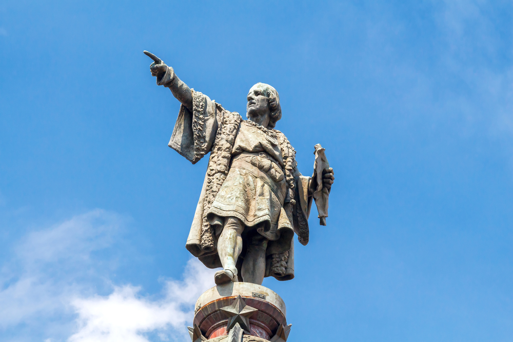
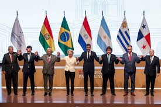

Notícia 1
Publicado dia 01/03/2026 14h06

Após os ataques dos Estados Unidos e Israel ao Irã, que resultaram em retaliações iranianas com drones contra alvos nos Emirados Árabes Unidos e Catar, o fechamento do espaço aéreo na região afetou diretamente os voos entre Brasil e Oriente Médio. Pelo menos 13 voos foram impactados, incluindo cinco cancelamentos no Aeroporto Tom Jobim, no Rio de Janeiro. As companhias Emirates e Qatar Airways, que operam no Brasil, suspenderam temporariamente suas rotas: a Emirates interrompeu todas as operações para Dubai até segunda-feira, enquanto a Qatar suspendeu os voos para Doha até que o espaço aéreo seja reaberto. Globalmente, mais de 1.800 voos foram cancelados desde os ataques, deixando milhares de passageiros retidos em aeroportos da região.
Notícia 2
Publicado dia 23/03/2026 12h37

A Casa Branca instalou uma estátua do explorador italiano Cristóvão Colombo em seus jardins, na mais recente iniciativa do presidente dos Estados Unidos, Donald Trump, para reconhecer a figura histórica controversa. A estátua é uma réplica daquela que foi derrubada na cidade de Baltimore, na costa leste dos EUA, em 2020, durante protestos nacionais contra o racismo nas instituições americanas, desencadeados pela morte de George Floyd. A nova estátua foi colocada nos jardins do Edifício Executivo Eisenhower, que fica ao lado da Casa Branca. Trump chamou Colombo de "o herói americano original e um dos homens mais galantes e visionários" da Terra, em uma carta enviada à Conferência dos Presidentes das Principais Organizações Ítalo-Americanas, divulgada neste domingo (22).
Notícia 3
Publicado dia 23/03/2026 08h35

O acordo de livre comércio da União Europeia (UE) com o Mercosul entrará em vigor em caráter provisório a partir de 1º de maio, informou a Comissão Europeia nesta segunda-feira (23). Com o envio do documento ao Paraguai — responsável legal pelos tratados do Mercosul —, a Comissão concluiu o último passo para a entrada em vigor do tratado enquanto os trâmites formais seguem em andamento.